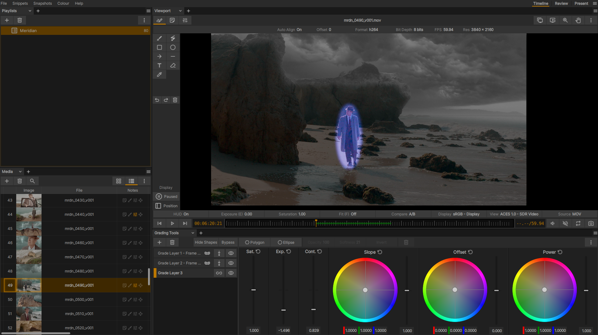

Grading Tool
{kind=link}

The grading tool in action
xSTUDIO は、Media 項目、または Media 項目の全体のデュレーション内にある単一のフレームや一部のフレーム範囲に適用できる SOP グレードの作成および操作を可能にするグレーディングツールを提供します。画像の特定の領域をマスクインまたはマスクアウトするためのマスクシェイプを非常に簡単に作成できます。xSTUDIO の Notes システムと組み合わせることで、アイデアを記録して共有するための高度なコントロールを備えた、クリエイティブなグレーディングの Notes を作成できます。必要に応じて、1 つの Media 項目に複数のグレードを「‘stacked’ （重ねがけ）」することも可能です。
Creating a Grade
画面に対象のメディアフレームを表示し、Grading ツールを開いた状態（これはフローティングウィンドウとして表示するか、xSTUDIO の interface layout 内のパネルとして配置できます）で、+ ボタンをクリックして新しいグレードレイアウトを作成するか、あるいは Grading インターフェース内のカラーホイールのハンドルを動かし始めるだけで作成できます。
Editing a Grade
既存の Grade を変更したい場合は、Grading パネルの左側にあるリスト内の Grade レイヤー項目をクリックします。
- * ゴミ箱ボタンで、選択した Grade を削除します
- * 対応するボタンを使用して、Grade を単一のフレームに適用するか、またはメディアクリップの全体のデュレーションに適用するかを設定します
Polygon Grade Masks
「Polygon」ボタンをクリックして、マスクシェイプを追加します
Polygon を追加するときは、Viewport 内をクリックして Polygon の境界となる頂点（Verts）を配置します。最初のポイントをクリックすると、シェイプが閉じられて Polygon が作成されます。
Polygon は、そのポイントをドラッグすることで編集できます。
Polygon の境界線をダブルクリックすると、新しいポイントを追加できます。
マウスカーソルを Polygon のポイントに合わせた状態で SHIFT+クリック すると、そのポイントを削除できます。
Ellipse Grade Masks
「Ellipse」ボタンをクリックして、楕円形のマスクシェイプを追加します
Viewport のオーバーレイ上にあるハンドルで操作します
Note
Ellipse（楕円）や Polygon（多角形）のマスクのエッジにおける fall-off を調整するには、Softness コントロールを使用します（左右にドラッグ）。マスクの効果は、対応するボタンで反転させることができます。
Grading Walkthrough
このビデオでは、Polygon や Ellipse を使用してプレート（実写素材）の特定の領域に Grading を適用する方法と、画像全体に Grade を追加する方法を紹介しています：